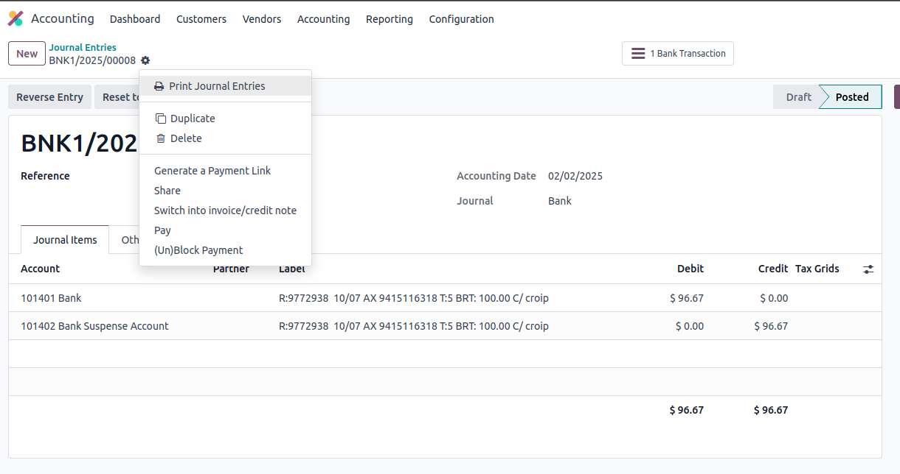
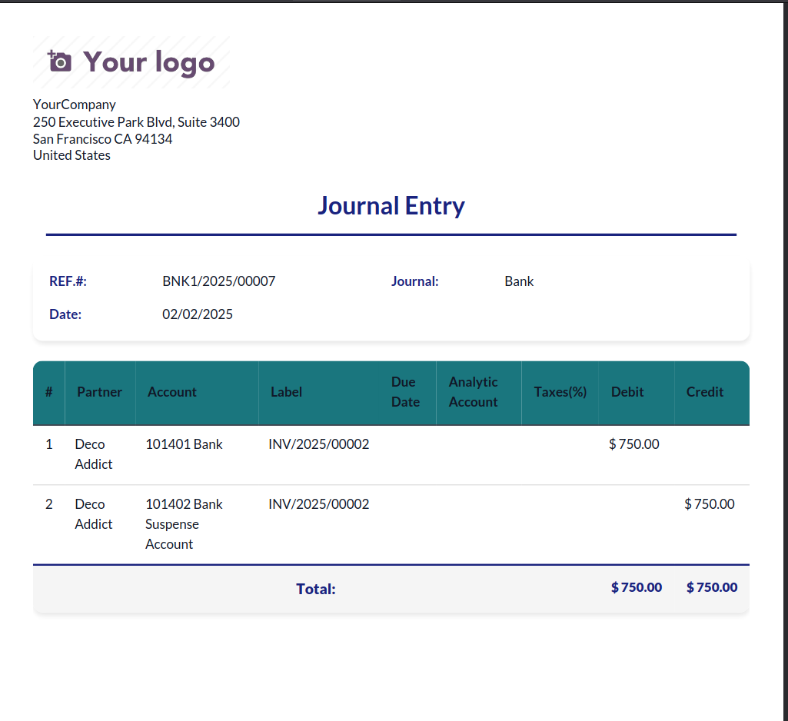
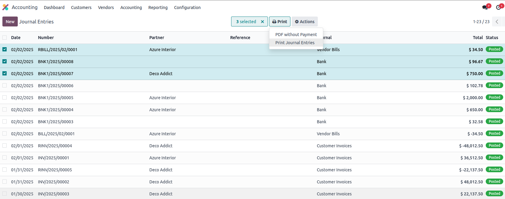

Step 1: Access Print Menu
- Navigate to your journal entry
- Find the "Print Journal Entries" button

Step 2: View Generated Report

- Professional PDF format
- Complete entry details
- Accurate calculations
Step 3: Batch Printing
- Select multiple entries at once
- Print all selected entries together
- Save time with bulk processing
